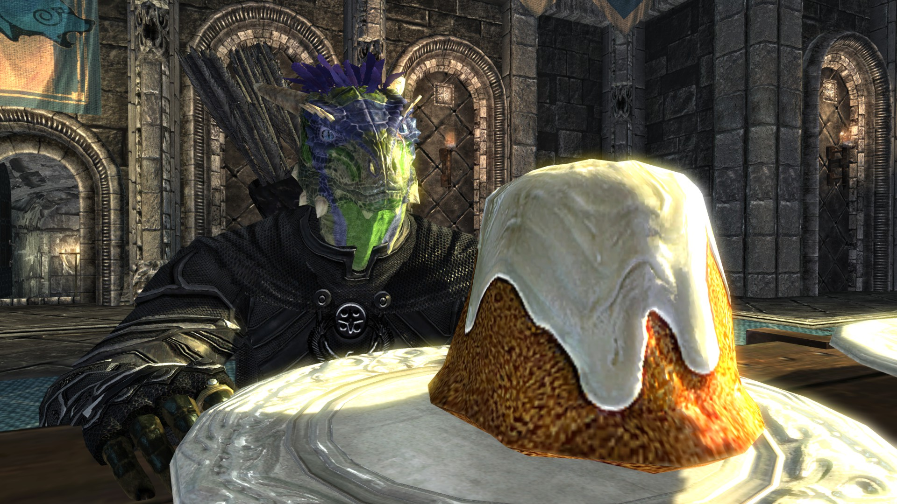

Sweetroll

What is a sweetroll?
The most iconic yet simplest dessert in all of Skyrim is the Sweetroll. This treat earns its fame from a dialogue line said constantly by Skyrim's guards expressing their annoyance. Time and time again players have heard the famous line, "Let me guess...someone stole your Sweetroll?". While this line is said sarcastically it is not surprising to think someone would steal this delectable dessert.
Ingredients
- 2 cups plain flour
- 1 tsp baking powder
- 3/4 cup milk
- 1/2 cup caster sugar
- 1 cup maple syrup or honey
- 3 eggs (beaten)
- 1 1/2 cup butter (melted)
- 3 tsp cinnamon powder
- 1 cup icing sugar
How to Cook a Sweetroll
- Mix the eggs, milk and flour together in a large mixing bowl and wisk thoroughly
- Add the sugar baking powder and maple syrup. Continue to stir throughout
- Sprinkle cinnamon powder
- Knead the mixture with your hands and mold into shape of a sweetroll
- Bake in oven for 20 minutes
- Apply icing sugar ontop of baked mixture
- Enjoy the finest desert Skyrim has to offer